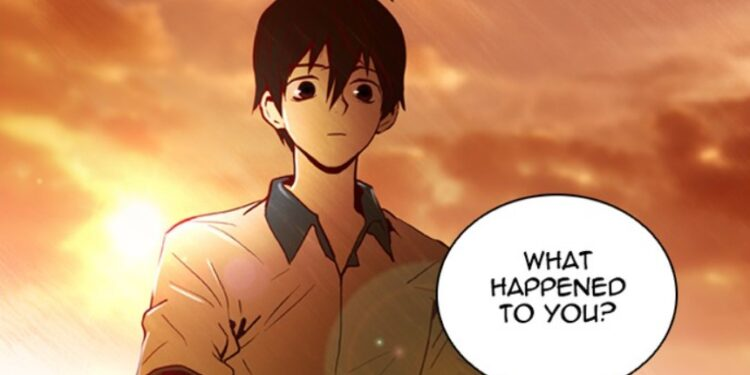

Tower of God
The Tower of God revolves around Twenty-Fifth Baam, who spends most of his early life stuck beneath
the titular tower. While looking for his friend Rachel, he climbs the mysterious tower. What he will
discover in his quest to find his friend is also beyond anything he could have imagined. Moreover,
the more he climbs, the more difficult it gets, as each floor offers him a new obstacle that he has
to overcome to keep climbing. Baam needs to succeed in all these challenges to reach the peak of the
Tower eventually.
Leveling Up with the Gods
Leveling Up with the Gods is undoubtedly one of the best supernatural manhwa. It centres on Kim
Yuwon, who, after losing the battle against the Outer Gods, is offered another opportunity and sent
back into the past. Now, back to the time before the war, Yuwon has only one objective – to
eventually climb the Tower and become the strongest to avert the potential destruction. If you liked
Tower of God, you must read Leveling Up With the Gods.

Dice: The Cube that Changes Everything
Dice: The Cube that Changes Everything, in particular, centres around the central character, Dongtae.
Initially, he begins as a shy high school kid who is a loser in every aspect of his life. After
being constantly mistreated and bullied, his life takes a fortunate twist when he becomes a dicer.
However, can he alter his whole life by rolling a simple cube?

Existence
Existence follows the central character Lee Jan-In, who has experienced countless lives as a
different species being before being born as a human. With each life, he questions the objective of
his constant reincarnation. After being born as a human with all the memories of his previous life,
he understands the purpose of his existence, and that is the extermination of humanity. However,
soon after experiencing the intricacies of human life, he eventually begins to question the meaning
of his life.

The Breaker
The Breaker, in particular, follows the central character of the manhwa Lee Shi-Woon. After
witnessing the fighting abilities of his new English teacher, Chun Woo, Lee finds a ray of hope to
alter his life from constant bullying. With the hope of escaping his life, Shi-Woon finally
convinces his teacher to take him as his disciple. However, what Shi-Woon considers an escape from
his reality is only a welcome invitation to the infernal world of the Murim.

The First Hunter – Another Great Supernatural Manhwa
The First Hunter is an apocalyptic supernatural manhwa set in a wasteland of Earth following the
abrupt invasion of the monsters. Amidst the chaos and war against the monsters, humans also discover
special abilities. The manhwa, in particular, focuses on the central character, Kim Taehoon, a
former special force officer. He looks gloomier than ever when an artefact forecasts his demise
several years later. Learning the possibility of his death, he eventually fights to change the
future of the world and his fate.

Ultimate Outcast
The Ultimate Outcast manhwa focuses on high school student Kang Hanuel, a victim of societal
ostracization. Although every outcast doesn’t turn vengeful, after witnessing his friend in a
terrifying incident, Kang decides to be that outcast. After discovering a strange power, Hanuel
finally decides to take revenge on everyone responsible in the most terrifying way possible, making
it one of the best supernatural manhwa.

Supernatural Manhwa: Noblesse
Noblesse is a title only given to the strongest vampire. The Manhwa series takes place in a fictional
world where the supernatural and the ordinary coexist apart from each other. The central character,
Cadiz Etrama Di Raizel, falls into a slumber of 820 years and eventually awakens to an unfamiliar
world. He finally reunites with his loyal servant Frankenstein and starts a new life. However, with
the dangers looming around it would be difficult to conceal his abilities as a Noblesse for long.

Supernatural Manhwa: Unholy Blood
Unholy Blood focuses on Hayan Park, an ordinary university student who wants nothing but a peaceful
life. Her wish is destroyed after the demise of her adopted father at the hands of vampires,
compelling her to disclose her true identity finally. She is the last pure-blood vampire. After
revealing her reality, she is forced to confront her past and biological family. Eventually, with a
human detective’s help, Hayan sets out for revenge against the vampires.

Best Supernatural Manhwa – Leviathan
The protagonist, Bota, and his family live on a small boat because the water has risen and captured
the dry lands. So, they search for food and more from the underwater cities. Leviathan follows the
survival journey of the siblings Bota and Rita Ma following the murder of their father at the hands
of a sea monster. Following a near-lethal encounter with a monster, Bota and Rita are taken in by
Kana, an acquaintance of Teon Ma, their late father. Eventually, a tragic twist in the narrative,
Bota, Rita, and Kana find themselves battling for the survival of humanity.